This page provides a brief overview of MFEM's example codes and miniapps. For
detailed documentation of the MFEM sources, including the examples, see the
online Doxygen documentation,
or the doc directory in the distribution.
The goal of the example codes is to provide a step-by-step introduction to MFEM
in simple model settings. The miniapps are more complex, and are intended to be
more representative of the advanced usage of the library in physics/application
codes. We recommend that new users start with the example codes before moving to
the miniapps.
Select from the categories below to display examples and miniapps that contain the
respective feature. All examples support (arbitrarily) high-order meshes and
finite element spaces.
The numerical results from the example codes can be visualized using the
GLVis visualization tool (based on MFEM). See the
GLVis website for more details.
Users are encouraged to submit any example codes and miniapps that they have created and
would like to share. Contact a member of the MFEM team to report
bugs
or post questions or comments.
Application (PDE)
Finite Elements
Discretization
Solver
Example 1: Laplace Problem
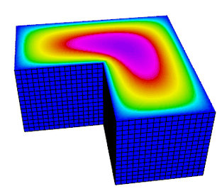
This example code demonstrates the use of MFEM to define a
simple isoparametric finite element discretization of the
Laplace problem $$-\Delta u = 1$$ with homogeneous Dirichlet
boundary conditions. Specifically, we discretize with the
finite element space coming from the mesh (linear by default, quadratic
for quadratic curvilinear mesh, NURBS for NURBS mesh, etc.)
The example highlights the use of mesh refinement, finite
element grid functions, as well as linear and bilinear forms
corresponding to the left-hand side and right-hand side of the
discrete linear system. We also cover the explicit elimination
of essential boundary conditions, static condensation, and the optional
connection to the GLVis tool for visualization.
This example code solves a simple linear elasticity problem
describing a multi-material cantilever beam.
Specifically, we approximate the weak form of
$$-{\rm div}({\sigma}({\bf u})) = 0$$
where
$${\sigma}({\bf u}) = \lambda\, {\rm div}({\bf u})\,I + \mu\,(\nabla{\bf u} + \nabla{\bf u}^T)$$
is the stress tensor corresponding to displacement field ${\bf u}$, and $\lambda$ and $\mu$
are the material Lame constants. The boundary conditions are
${\bf u}=0$ on the fixed part of the boundary with attribute 1, and
${\sigma}({\bf u})\cdot n = f$ on the remainder with $f$ being
a constant pull down vector on boundary elements with attribute 2, and zero
otherwise. The geometry of the domain is assumed to be as follows:
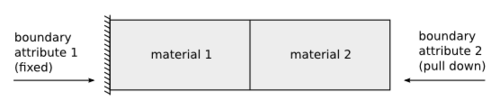
The example demonstrates the use of high-order and NURBS vector
finite element spaces with the linear elasticity bilinear form,
meshes with curved elements, and the definition of piece-wise
constant and vector coefficient objects. Static condensation is
also illustrated.
The example has a serial (ex2.cpp)
and a parallel (ex2p.cpp) version.
It also has a PETSc modification in examples/petsc
and a PUMI modification in examples/pumi.
We recommend viewing Example 1 before viewing this example.
Example 3: Definite Maxwell Problem
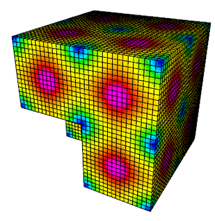
This example code solves a simple 3D electromagnetic diffusion
problem corresponding to the second order definite Maxwell
equation $$\nabla\times\nabla\times\, E + E = f$$
with boundary condition $ E \times n $ = "given tangential field".
Here, we use a given exact solution $E$ and compute the corresponding r.h.s.
$f$. We discretize with Nedelec finite elements in 2D or 3D.
The example demonstrates the use of $H(curl)$ finite element
spaces with the curl-curl and the (vector finite element) mass
bilinear form, as well as the computation of discretization
error when the exact solution is known. Static condensation is
also illustrated.
The example has a serial (ex3.cpp)
and a parallel (ex3p.cpp) version.
It also has a PETSc modification in examples/petsc.
Partial assembly and GPU devices are supported.
We recommend viewing examples 1-2 before viewing this example.
Example 4: Grad-div Problem
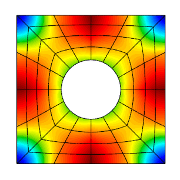
This example code solves a simple 2D/3D $H(div)$
diffusion problem corresponding to the second order definite equation
$$-{\rm grad}(\alpha\,{\rm div}(F)) + \beta F = f$$
with boundary condition $F \cdot n$ = "given normal field".
Here we use a given exact solution $F$ and compute the corresponding
right hand side $f$. We discretize with the Raviart-Thomas finite elements.
The example demonstrates the use of $H(div)$
finite element spaces with the grad-div and $H(div)$
vector finite element mass bilinear form, as well as the computation of discretization
error when the exact solution is known.
Bilinear form hybridization and static condensation are also illustrated.
The example has a serial (ex4.cpp)
and a parallel (ex4p.cpp) version.
It also has a PETSc modification in examples/petsc.
Partial assembly and GPU devices are supported.
We recommend viewing examples 1-3 before viewing this example.
Example 5: Darcy Problem
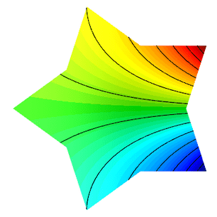
This example code solves a simple 2D/3D mixed Darcy problem
corresponding to the saddle point system
$$ \begin{array}{rcl}
k\,{\bf u} + {\rm grad}\,p &=& f \\
-{\rm div}\,{\bf u} &=& g
\end{array} $$
with natural boundary condition $-p = $ "given pressure".
Here we use a given exact solution $({\bf u},p)$ and compute the
corresponding right hand side $(f, g)$. We discretize with Raviart-Thomas
finite elements (velocity $\bf u$) and piecewise discontinuous
polynomials (pressure $p$).
The example demonstrates the use of the BlockMatrix and BlockOperator
classes, as well as the collective saving of several grid functions in
VisIt and ParaView
formats.
The example has a serial (ex5.cpp)
and a parallel (ex5p.cpp) version.
It also has a PETSc modification in examples/petsc.
Partial assembly is supported.
We recommend viewing examples 1-4 before viewing this example.
Example 6: Laplace Problem with AMR
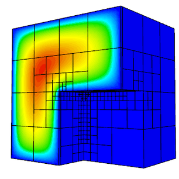
This is a version of Example 1 with a simple adaptive mesh
refinement loop. The problem being solved is again the Laplace
equation $$-\Delta u = 1$$ with homogeneous Dirichlet boundary
conditions. The problem is solved on a sequence of meshes which
are locally refined in a conforming (triangles, tetrahedrons)
or non-conforming (quadrilaterals, hexahedra) manner according
to a simple ZZ error estimator.
The example demonstrates MFEM's capability to work with both
conforming and nonconforming refinements, in 2D and 3D, on
linear, curved and surface meshes. Interpolation of functions
from coarse to fine meshes, as well as persistent GLVis
visualization are also illustrated.
The example has a serial (ex6.cpp)
and a parallel (ex6p.cpp) version.
It also has a PETSc modification in examples/petsc
and a PUMI modification in examples/pumi.
Partial assembly and GPU devices are supported.
We recommend viewing Example 1 before viewing this example.
Example 7: Surface Meshes
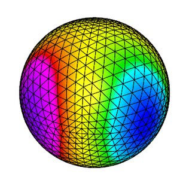
This example code demonstrates the use of MFEM to define a
triangulation of a unit sphere and a simple isoparametric
finite element discretization of the Laplace problem with mass
term, $$-\Delta u + u = f.$$
The example highlights mesh generation, the use of mesh
refinement, high-order meshes and finite elements, as well as
surface-based linear and bilinear forms corresponding to the
left-hand side and right-hand side of the discrete linear
system. Simple local mesh refinement is also demonstrated.
The example has a serial (ex7.cpp)
and a parallel (ex7p.cpp) version.
We recommend viewing Example 1 before viewing this example.
Example 8: DPG for the Laplace Problem
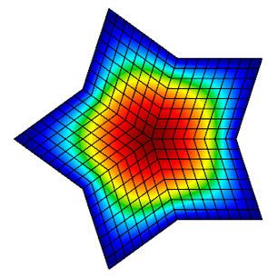
This example code demonstrates the use of the Discontinuous
Petrov-Galerkin (DPG) method in its primal 2x2 block form as a
simple finite element discretization of the Laplace problem
$$-\Delta u = f$$ with homogeneous Dirichlet boundary conditions. We
use high-order continuous trial space, a high-order interfacial
(trace) space, and a high-order discontinuous test space
defining a local dual ($H^{-1}$) norm.
We use the primal form of DPG, see
"A primal DPG method without a first-order reformulation",
Demkowicz and Gopalakrishnan, CAM 2013.
The example highlights the use of interfacial (trace) finite
elements and spaces, trace face integrators and the definition
of block operators and preconditioners.
The example has a serial (ex8.cpp)
and a parallel (ex8p.cpp) version.
We recommend viewing examples 1-5 before viewing this example.
Example 9: DG Advection
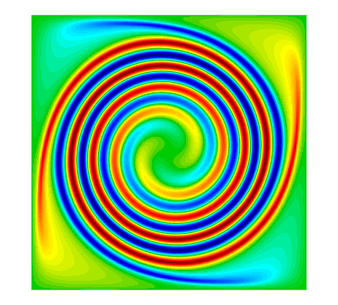
This example code solves the time-dependent advection equation
$$\frac{\partial u}{\partial t} + v \cdot \nabla u = 0,$$ where $v$ is a given fluid
velocity, and $u_0(x)=u(0,x)$ is a given initial condition.
The example demonstrates the use of Discontinuous Galerkin (DG) bilinear forms
in MFEM (face integrators), the use of explicit and implicit (with block ILU
preconditioning) ODE time integrators, the definition of periodic boundary
conditions through periodic meshes, as well as the use of
GLVis for persistent visualization of a time-evolving
solution. The saving of time-dependent data files for external visualization
with VisIt and ParaView is also illustrated.
This example solves a time dependent nonlinear elasticity problem of the form
$$ \frac{dv}{dt} = H(x) + S v\,,\qquad \frac{dx}{dt} = v\,, $$
where $H$ is a hyperelastic model and $S$ is a viscosity operator of
Laplacian type. The geometry of the domain is assumed to be as follows:
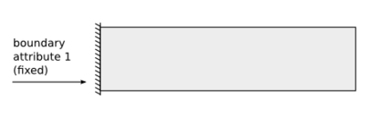
The example demonstrates the use of nonlinear operators, as well as their
implicit time integration using a Newton method for solving an associated
reduced backward-Euler type nonlinear equation. Each Newton step requires the
inversion of a Jacobian matrix, which is done through a (preconditioned) inner
solver.
The example has a serial (ex10.cpp)
and a parallel (ex10p.cpp) version.
It also has a SUNDIALS modification in examples/sundials
and a PETSc modification in examples/petsc.
We recommend viewing examples 2 and 9 before viewing this example.
Example 11: Laplace Eigenproblem
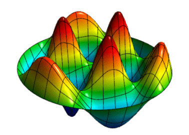
This example code demonstrates the use of MFEM to solve the eigenvalue problem
$$-\Delta u = \lambda u$$ with homogeneous Dirichlet boundary conditions.
We compute a number of the lowest eigenmodes by discretizing the Laplacian and
Mass operators using a finite element space of the specified order, or an
isoparametric/isogeometric space if order < 1 (quadratic for quadratic
curvilinear mesh, NURBS for NURBS mesh, etc.)
The example highlights the use of the LOBPCG eigenvalue solver together with the
BoomerAMG preconditioner in HYPRE, as well as optionally the SuperLU or
STRUMPACK parallel direct solvers. Reusing a single GLVis
visualization window for multiple eigenfunctions is also illustrated.
The example has only a parallel
(ex11p.cpp) version.
We recommend viewing Example 1 before viewing this example.
Example 12: Linear Elasticity Eigenproblem
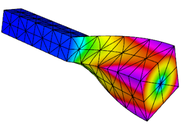
This example code solves the linear elasticity eigenvalue
problem for a multi-material cantilever beam.
Specifically, we compute a number of the lowest eigenmodes by approximating the weak form of
$$-{\rm div}({\sigma}({\bf u})) = \lambda {\bf u} \,,$$
where
$${\sigma}({\bf u}) = \lambda\, {\rm div}({\bf u})\,I + \mu\,(\nabla{\bf u} + \nabla{\bf u}^T)$$
is the stress tensor corresponding to displacement field $\bf u$, and $\lambda$ and $\mu$
are the material Lame constants. The boundary conditions are
${\bf u}=0$ on the fixed part of the boundary with attribute 1, and
${\sigma}({\bf u})\cdot n = f$ on the remainder.
The geometry of the domain is assumed to be as follows:
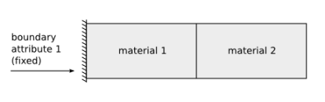
The example highlights the use of the LOBPCG eigenvalue solver together with the
BoomerAMG preconditioner in HYPRE.
Reusing a single GLVis visualization window for multiple
eigenfunctions is also illustrated.
The example has only a parallel
(ex12p.cpp) version.
We recommend viewing examples 2 and 11 before viewing this example.
Example 13: Maxwell Eigenproblem
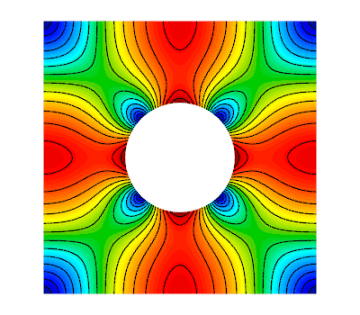
This example code solves the Maxwell (electromagnetic)
eigenvalue problem
$$\nabla\times\nabla\times\, E = \lambda\, E $$
with homogeneous Dirichlet boundary conditions $E \times n = 0$.
We compute a number of the lowest nonzero eigenmodes by
discretizing the curl curl operator using a Nedelec finite element space of
the specified order in 2D or 3D.
The example highlights the use of the AME subspace eigenvalue
solver from HYPRE, which uses LOBPCG and AMS internally.
Reusing a single GLVis visualization window for multiple
eigenfunctions is also illustrated.
The example has only a parallel
(ex13p.cpp) version.
We recommend viewing examples 3 and 11 before viewing this example.
Example 14: DG Diffusion
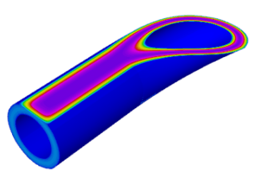
This example code demonstrates the use of MFEM to define a
discontinuous Galerkin (DG) finite element discretization of
the Laplace problem $$-\Delta u = 1$$ with homogeneous Dirichlet
boundary conditions. Finite element spaces of any order,
including zero on regular grids, are supported. The example highlights the use
of discontinuous spaces and DG-specific face integrators.
The example has a serial (ex14.cpp)
and a parallel (ex14p.cpp) version.
We recommend viewing examples 1 and 9 before viewing this example.
Example 15: Dynamic AMR
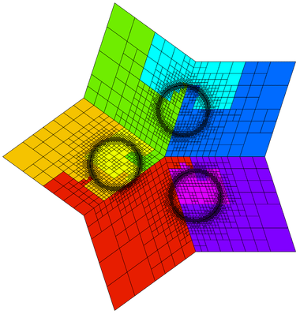
Building on Example 6, this example demonstrates dynamic adaptive mesh refinement.
The mesh is adapted to a time-dependent solution by refinement
as well as by derefinement. For simplicity, the solution is
prescribed and no time integration is done. However, the error
estimation and refinement/derefinement decisions are realistic.
At each outer iteration the right hand side function is changed
to mimic a time dependent problem. Within each inner iteration
the problem is solved on a sequence of meshes which are locally
refined according to a simple ZZ error estimator. At the end
of the inner iteration the error estimates are also used to
identify any elements which may be over-refined and a single
derefinement step is performed. After each refinement or
derefinement step a rebalance operation is performed to keep
the mesh evenly distributed among the available processors.
The example demonstrates MFEM's capability to refine, derefine
and load balance nonconforming meshes, in 2D and 3D, and on
linear, curved and surface meshes. Interpolation of functions
between coarse and fine meshes, persistent GLVis visualization,
and saving of time-dependent fields for external visualization
with VisIt are also illustrated.
The example has a serial (ex15.cpp)
and a parallel (ex15p.cpp) version.
We recommend viewing examples 1, 6 and 9 before viewing this example.
Example 16: Time Dependent Heat Conduction
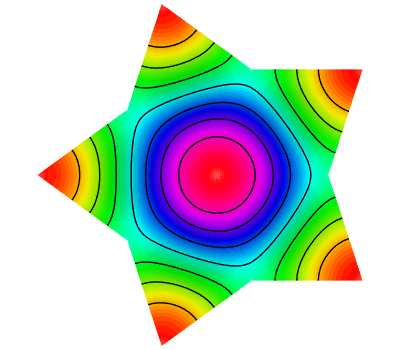
This example code solves a simple 2D/3D time dependent nonlinear heat conduction problem
$$\frac{du}{dt} = \nabla \cdot \left( \kappa + \alpha u \right) \nabla u$$
with a natural insulating boundary condition $\frac{du}{dn} = 0$.
We linearize the problem by using the temperature field $u$ from the previous time
step to compute the conductivity coefficient.
This example demonstrates both implicit and explicit time integration as well as a single
Picard step method for linearization. The saving of time dependent data files for external
visualization with VisIt is also illustrated.
The example has a serial (ex16.cpp)
and a parallel (ex16p.cpp) version.
We recommend viewing examples 2, 9, and 10 before viewing this example.
Example 17: DG Linear Elasticity
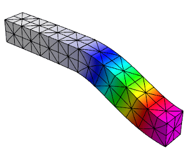
This example code solves a simple linear elasticity problem
describing a multi-material cantilever beam using symmetric or
non-symmetric discontinuous Galerkin (DG) formulation.
Specifically, we approximate the weak form of
$$-{\rm div}({\sigma}({\bf u})) = 0$$
where
$${\sigma}({\bf u}) = \lambda\, {\rm div}({\bf u})\,I + \mu\,(\nabla{\bf u} + \nabla{\bf u}^T)$$
is the stress tensor corresponding to displacement field ${\bf u}$, and $\lambda$ and $\mu$
are the material Lame constants. The boundary conditions are
Dirichlet, $\bf{u}=\bf{u_D}$, on the fixed part of the boundary, namely
boundary attributes 1 and 2; on the rest of the boundary we use
${\sigma}({\bf u})\cdot n = {\bf 0}$. The geometry of the domain is assumed to be
as follows:
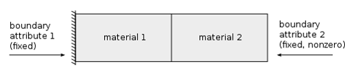
The example demonstrates the use of high-order DG vector finite
element spaces with the linear DG elasticity bilinear form,
meshes with curved elements, and the definition of piece-wise
constant and function vector-coefficient objects. The use of
non-homogeneous Dirichlet b.c. imposed weakly, is also
illustrated.
The example has a serial (ex17.cpp)
and a parallel (ex17p.cpp) version.
We recommend viewing examples 2 and 14 before viewing this example.
Example 18: DG Euler Equations
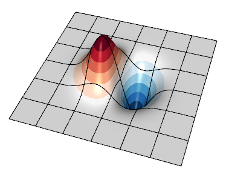
This example code solves the compressible Euler system of equations, a model
nonlinear hyperbolic PDE, with a discontinuous Galerkin (DG) formulation. The
primary purpose is to show how a transient system of nonlinear equations can be
formulated in MFEM. The equations are solved in conservative form
with a state vector $u = [ \rho, \rho v_0, \rho v_1, \rho E ]$, where $\rho$ is
the density, $v_i$ is the velocity in the $i^{\rm th}$ direction, $E$ is the
total specific energy, and $H = E + p / \rho$ is the total specific enthalpy.
The pressure, $p$ is computed through a simple equation of state (EOS) call.
The conservative hydrodynamic flux ${\bf F}$ in each direction $i$ is
$${\bf F_{\it i}} = [ \rho v_i, \rho v_0 v_i + p \delta_{i,0}, \rho v_1 v_i + p \delta_{i,1}, \rho v_i H ]$$
Specifically, the example solves for an exact solution of the equations whereby
a vortex is transported by a uniform flow. Since all boundaries are periodic
here, the method's accuracy can be assessed by measuring the difference between
the solution and the initial condition at a later time when the vortex returns
to its initial location.
Note that as the order of the spatial discretization increases, the timestep
must become smaller. This example currently uses a simple estimate derived by
Cockburn and Shu
for the 1D RKDG method. An additional factor can be tuned by passing the --cfl
(or -c shorter) flag.
The example demonstrates user-defined bilinear and nonlinear form integrators
for systems of equations that are defined with block vectors, and how these are
used with an operator for explicit time integrators. In this case the system
also involves an external approximate Riemann solver for the DG interface flux.
It also demonstrates how to use GLVis for in-situ visualization of vector grid
functions.
The example has a serial (ex18.cpp)
and a parallel (ex18p.cpp) version.
We recommend viewing examples 9, 14 and 17 before viewing this example.
Example 19: Incompressible Nonlinear Elasticity
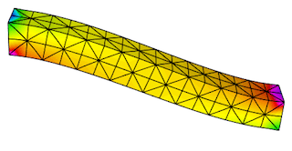
This example code solves the quasi-static incompressible nonlinear
hyperelasticity equations. Specifically, it solves the nonlinear equation
$$
\nabla \cdot \sigma(F) = 0
$$
subject to the constraint
$$
\text{det } F = 1
$$
where $\sigma$ is the Cauchy stress and $F_{ij} = \delta_{ij} + u_{i,j}$ is the deformation
gradient. To handle the incompressibility constraint, pressure is included as
an independent unknown $p$ and the stress response is modeled as an incompressible
neo-Hookean hyperelastic solid.
The geometry of the domain is assumed to be as follows:
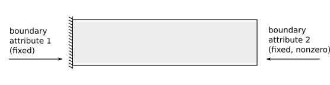
This formulation requires solving the saddle point system
$$ \left[ \begin{array}{cc}
K &B^T \\
B & 0
\end{array} \right]
\left[\begin{array}{c} \Delta u \\ \Delta p \end{array} \right] =
\left[\begin{array}{c} R_u \\ R_p \end{array} \right]
$$
at each Newton step. To solve this linear system, we implement a specialized block
preconditioner of the form
$$
P^{-1} =
\left[\begin{array}{cc} I & -\tilde{K}^{-1}B^T \\ 0 & I \end{array} \right]
\left[\begin{array}{cc} \tilde{K}^{-1} & 0 \\ 0 & -\gamma \tilde{S}^{-1} \end{array} \right]
$$
where $\tilde{K}^{-1}$ is an approximation of the inverse of the stiffness matrix $K$ and
$\tilde{S}^{-1}$ is an approximation of the inverse of the Schur complement $S = BK^{-1}B^T$.
To approximate the Schur complement, we use the mass matrix for the pressure variable $p$.
The example demonstrates how to solve nonlinear systems of equations that are defined with
block vectors as well as how to implement specialized block preconditioners for use in
iterative solvers.
The example has a serial (ex19.cpp)
and a parallel (ex19p.cpp) version.
We recommend viewing examples 2, 5 and 10 before viewing this example.
Example 20: Symplectic Integration of Hamiltonian Systems
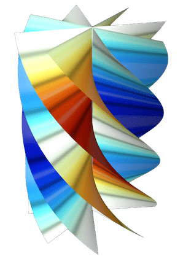
This example demonstrates the use of the variable order, symplectic time
integration algorithm. Symplectic integration algorithms are designed to
conserve energy when integrating systems of ODEs which are derived from
Hamiltonian systems.
Hamiltonian systems define the energy of a system as a function of
time (t), a set of generalized coordinates (q), and their corresponding
generalized momenta (p).
$$
H(q,p,t) = T(p) + V(q,t)
$$
Hamilton's equations then specify how q and p evolve in time:
$$
\frac{dq}{dt} = \frac{dH}{dp}\,,\qquad
\frac{dp}{dt} = -\frac{dH}{dq}
$$
To use the symplectic integration classes we need to define an mfem::Operator
${\bf P}$ which evaluates the action of dH/dp, and an
mfem::TimeDependentOperator ${\bf F}$ which computes -dH/dq.
This example visualizes its results as an evolution in phase space by defining
the axes to be $q$, $p$, and $t$ rather than $x$, $y$, and $z$. In this space
we build a ribbon-like mesh with nodes at $(0,0,t)$ and $(q,p,t)$. Finally we
plot the energy as a function of time as a scalar field on this ribbon-like
mesh. This scheme highlights any variations in the energy of the system.
This example offers five simple 1D Hamiltonians:
Simple Harmonic Oscillator (mass on a spring)
$$H = \frac{1}{2}\left( \frac{p^2}{m} + \frac{q^2}{k} \right)$$
In all cases these Hamiltonians are shifted by constant values so that the
energy will remain positive. The mean and standard deviation of the computed
energies at each time step are displayed upon completion.
When run in parallel, each processor integrates the same Hamiltonian
system but starting from different initial conditions.
The example has a serial (ex20.cpp)
and a parallel (ex20p.cpp) version.
See the Maxwell miniapp for another
application of symplectic integration.
Example 21: Adaptive mesh refinement for linear elasticity
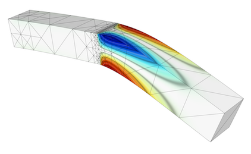
This is a version of Example 2 with a simple adaptive mesh
refinement loop. The problem being solved is again linear
elasticity describing a multi-material cantilever beam.
The problem is solved on a sequence of meshes which
are locally refined in a conforming (triangles, tetrahedrons)
or non-conforming (quadrilaterals, hexahedra) manner according
to a simple ZZ error estimator.
The example demonstrates MFEM's capability to work with both
conforming and nonconforming refinements, in 2D and 3D, on
linear and curved meshes. Interpolation of functions from
coarse to fine meshes, as well as persistent GLVis
visualization are also illustrated.
The example has a serial (ex21.cpp)
and a parallel (ex21p.cpp) version.
We recommend viewing Examples 2 and 6 before viewing this example.
Example 22: Complex Linear Systems
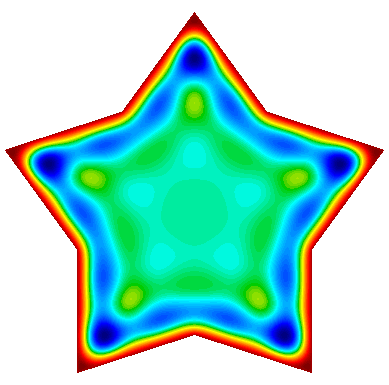
This example code demonstrates the use of MFEM to define and
solve a complex-valued linear system. It implements three variants
of a damped harmonic oscillator:
In each case the field is driven by a forced oscillation, with
angular frequency $\omega$, imposed at the boundary or a portion
of the boundary.
The example also demonstrates how to display a time-varying solution as
a sequence of fields sent to a single GLVis socket.
The example has a serial (ex22.cpp)
and a parallel (ex22p.cpp) version.
We recommend viewing examples 1, 3, and 4 before viewing this example.
Example 23: Wave Problem
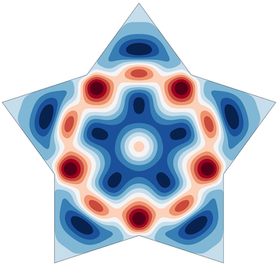
This example code solves a simple 2D/3D wave
equation with a second order time derivative:
$$\frac{\partial^2 u}{\partial t^2} - c^2\Delta u = 0$$
The boundary conditions are either Dirichlet or Neumann.
The example demonstrates the use of time dependent operators,
implicit solvers and second order time integration.
The example has only a serial (ex23.cpp) version.
We recommend viewing examples 9 and 10 before viewing this example.
Example 24: Mixed finite element spaces
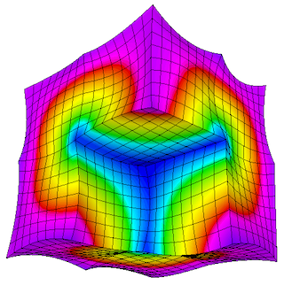
This example code illustrates usage of mixed finite element
spaces. Using two different approaches, we project a gradient
of a function in $H^1$ to $H(curl)$. Other spaces and example
computations are to be added in the future.
We also illustrate usage of a DiscreteLinearOperator and a
DiscreteInterpolator to interpolate a gradient in an $H(curl)$
finite element space.
The example has a serial (ex24.cpp)
and a parallel (ex24p.cpp) version.
Partial assembly and GPU devices are supported.
We recommend viewing examples 1 and 3 before viewing this example.
Example 25: Perfectly Matched Layers
The example illustrates the use of a Perfectly Matched Layer (PML) for the
simulation of time-harmonic electromagnetic waves propagating in unbounded
domains.
PML was originally introduced by Berenger in "A Perfectly Matched Layer for the
Absorption of Electromagnetic Waves".
It is a technique used to solve wave propagation problems posed in infinite
domains. The implementation involves the introduction of an artificial absorbing
layer that minimizes undesired reflections. Inside this layer a complex
coordinate stretching map is used which forces the wave modes to decay
exponentially.
The example solves the indefinite Maxwell equations
$$\nabla \times (a \nabla \times E) - \omega^2 b E = f.$$
where $a = \mu^{-1} |J|^{-1} J^T J$, $b= \epsilon |J| J^{-1} J^{-T}$ and $J$ is
the Jacobian matrix of the coordinate transformation.
The example demonstrates discretization with Nedelec finite elements in 2D or
3D, as well as the use of complex-valued bilinear and linear forms. Several
test problems are included, with known exact solutions.
The example has a serial (ex25.cpp)
and a parallel (ex25p.cpp) version.
We recommend viewing Example 22 before viewing this example.
Example 26: Multigrid Preconditioner
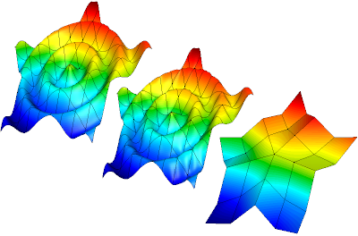
This example code demonstrates the use of MFEM to define a
simple isoparametric finite element discretization of the
Laplace problem $$-\Delta u = 1$$ with homogeneous Dirichlet
boundary conditions and how to solve it efficiently using a
matrix-free multigrid preconditioner.
The example highlights on the creation of a hierarchy of
discretization spaces and diffusion bilinear forms using
partial assembly. The levels in the hierarchy of finite
element spaces maybe constructed through geometric or
order refinements. Moreover, the construction of a multigrid
preconditioner for the PCG solver is shown. The multigrid
uses a PCG solver on the coarsest level and second order
Chebyshev accelerated smoothers on the other levels.
The example has a serial (ex26.cpp)
and a parallel (ex26p.cpp) version.
We recommend viewing Example 1 before viewing this example.
Volta Miniapp: Electrostatics
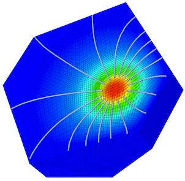
This miniapp demonstrates the use of MFEM to solve realistic problems
in the field of linear electrostatics. Its features include:
dielectric materials
charge densities
surface charge densities
prescribed voltages
applied polarizations
high order meshes
high order basis functions
adaptive mesh refinement
advanced visualization
For more details, please see the documentation in the
miniapps/electromagnetics directory.
The miniapp has only a parallel
(volta.cpp) version.
We recommend that new users start with the example codes before
moving to the miniapps.
Tesla Miniapp: Magnetostatics
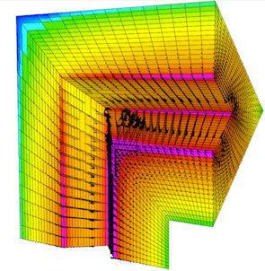
This miniapp showcases many of MFEM's features while solving a variety
of realistic magnetostatics problems. Its features include:
diamagnetic and/or paramagnetic materials
ferromagnetic materials
volumetric current densities
surface current densities
external fields
high order meshes
high order basis functions
adaptive mesh refinement
advanced visualization
For more details, please see the documentation in the
miniapps/electromagnetics directory.
The miniapp has only a parallel
(tesla.cpp) version.
We recommend that new users start with the example codes before
moving to the miniapps.
This miniapp solves the equations of transient full-wave electromagnetics.
Its features include:
mixed formulation of the coupled first-order Maxwell equations
$H(\mathrm{curl})$ discretization of the electric field
$H(\mathrm{div})$ discretization of the magnetic flux
energy conserving, variable order, implicit time integration
dielectric materials
diamagnetic and/or paramagnetic materials
conductive materials
volumetric current densities
Sommerfeld absorbing boundary conditions
high order meshes
high order basis functions
advanced visualization
For more details, please see the documentation in the
miniapps/electromagnetics directory.
The miniapp has only a parallel
(maxwell.cpp) version.
We recommend that new users start with the example codes before
moving to the miniapps.
Joule Miniapp: Transient Magnetics and Joule Heating
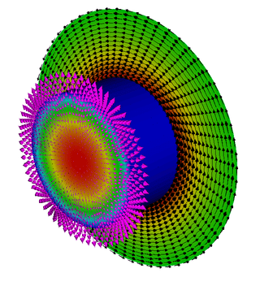
This miniapp solves the equations of transient low-frequency (a.k.a. eddy current)
electromagnetics, and simultaneously computes transient heat transfer with the heat source given
by the electromagnetic Joule heating.
Its features include:
$H^1$ discretization of the electrostatic potential
$H(\mathrm{curl})$ discretization of the electric field
$H(\mathrm{div})$ discretization of the magnetic field
$H(\mathrm{div})$ discretization of the heat flux
$L^2$ discretization of the temperature
implicit transient time integration
high order meshes
high order basis functions
adaptive mesh refinement
advanced visualization
For more details, please see the documentation in the
miniapps/electromagnetics directory.
The miniapp has only a parallel
(joule.cpp) version.
We recommend that new users start with the example codes before
moving to the miniapps.
Mobius Strip Miniapp
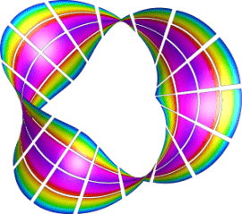
This miniapp generates various Mobius strip-like surface meshes. It is a good
way to generate complex surface meshes.
Manipulating the mesh topology and performing mesh transformation are demonstrated.
The mobius-strip mesh in the data directory was generated with this miniapp.
For more details, please see the documentation in the
miniapps/meshing directory.
The miniapp has only a serial
(mobius-strip.cpp) version.
We recommend that new users start with the example codes before
moving to the miniapps.
Klein Bottle Miniapp
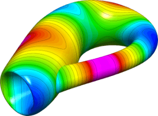
This miniapp generates three types of Klein bottle surfaces. It is similar to
the mobius-strip miniapp.
Manipulating the mesh topology and performing mesh transformation are demonstrated.
The klein-bottle and klein-donut meshes in the data directory were generated with this miniapp.
For more details, please see the documentation in the
miniapps/meshing directory.
The miniapp has only a serial
(klein-bottle.cpp) version.
We recommend that new users start with the example codes before
moving to the miniapps.
Toroid Miniapp
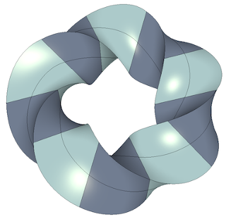
This miniapp generates two types of toroidal volume meshes; one with
triangular cross sections and one with square cross sections. It
works by defining a stack of individual elements and bending them so
that the bottom and top of the stack can be joined to form a torus. It
supports various options including:
The element type: 0 - Wedge, 1 - Hexahedron
The geometric order of the elements
The major and minor radii
The number of elements in the azimuthal direction
The number of nodes to offset by before rejoining the stack
The initial angle of the cross sectional shape
The number of uniform refinement steps to apply
Along with producing some visually interesting meshes, this miniapp
demonstrates how simple 3D meshes can be constructed and transformed
in MFEM. It also produces a family of meshes with simple but
non-trivial topology for testing various features in MFEM.
This miniapp has only a serial
(toroid.cpp) version.
We recommend that new users start with the example codes before
moving to the miniapps.
Twist Miniapp
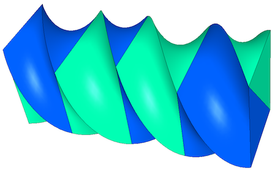
This miniapp generates simple periodic meshes to demonstrate MFEM's handling
of periodic domains. MFEM's strategy is to use a discontinuous vector field
to define the mesh coordinates on a topologically periodic mesh. It works by
defining a stack of individual elements and stitching together the top and
bottom of the mesh. The stack can also be twisted so that the vertices of the
bottom and top can be joined with any integer offset (for tetrahedral and
wedge meshes only even offsets are supported).
The Twist miniapp supports various options including:
The element type: 4 - Tetrahedron, 6 - Wedge, 8 - Hexahedron
The geometric order of the elements
The dimensions of the initial brick-shaped stack of elements
The number of elements in the z direction
The number of nodes to offset by before rejoining the stack
The number of uniform refinement steps to apply
Along with producing some visually interesting meshes, this miniapp
demonstrates how simple 3D meshes can be constructed and transformed
in MFEM. It also produces a family of meshes with simple but
non-trivial topology for testing various features in MFEM.
This miniapp has only a serial
(twist.cpp) version.
We recommend that new users start with the example codes before
moving to the miniapps.
Extruder Miniapp
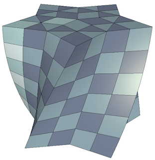
This miniapp creates higher dimensional meshes from lower dimensional meshes
by extrusion. Simple coordinate transformations can also be applied if desired.
The initial mesh can be 1D or 2D
1D meshes can be extruded in both the y and z directions
2D meshes can be triangular, quadrilateral, or contain both element types
Meshes with high order geometry are supported
User can specify the number of elements and the distance to extrude
Geometric order of the transformed mesh can be user selected or automatic
This miniapp provides another demonstration of how simple meshes can be
constructed and transformed in MFEM.
This miniapp has only a serial
(extruder.cpp) version.
We recommend that new users start with the example codes before
moving to the miniapps.
Shaper Miniapp
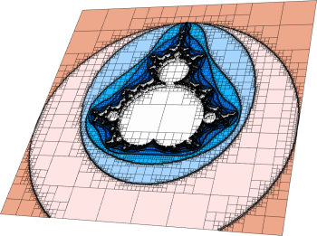
This miniapp performs multiple levels of adaptive mesh refinement to resolve the
interfaces between different "materials" in the mesh, as specified by a given
material function.
It can be used as a simple initial mesh generator, for example in the case when
the interface is too complex to describe without local refinement. Both
conforming and non-conforming refinements are supported.
For more details, please see the documentation in the
miniapps/meshing directory.
The miniapp has only a serial
(shaper.cpp) version.
We recommend that new users start with the example codes before
moving to the miniapps.
Mesh Explorer Miniapp
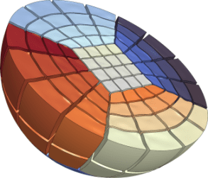
This miniapp is a handy tool to examine, visualize and manipulate a given
mesh. Some of its features are:
visualizing of mesh materials and individual mesh elements
mesh scaling, randomization, and general transformation
manipulation of the mesh curvature
the ability to simulate parallel partitioning
quantitative and visual reports of mesh quality
For more details, please see the documentation in the
miniapps/meshing directory.
The miniapp has only a serial
(mesh-explorer.cpp) version.
We recommend that new users start with the example codes before moving to the miniapps.
Mesh Optimizer Miniapp
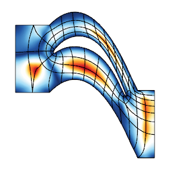
This miniapp performs mesh optimization using the Target-Matrix Optimization
Paradigm (TMOP) by P.Knupp et al., and a global variational minimization
approach. It minimizes the quantity
$$\sum_T \int_T \mu(J(x)),$$
where $T$ are the target (ideal) elements, $J$ is the Jacobian of the
transformation from the target to the physical element, and $\mu$ is the mesh
quality metric.
This metric can measure shape, size or alignment of the region around each
quadrature point. The combination of targets and quality metrics is used to
optimize the physical node positions, i.e., they must be as close as possible to
the shape / size / alignment of their targets.
This code also demonstrates a possible use of nonlinear operators, as well as
their coupling to Newton methods for solving minimization problems. Note that
the utilized Newton methods are oriented towards avoiding invalid meshes with
negative Jacobian determinants. Each Newton step requires the inversion of a
Jacobian matrix, which is done through an inner linear solver.
For more details, please see the documentation in the
miniapps/meshing directory.
The miniapp has a serial
(mesh-optimizer.cpp) and a
parallel (pmesh-optimizer.cpp)
version.
We recommend that new users start with the example codes before moving to the miniapps.
Minimal Surface Miniapp
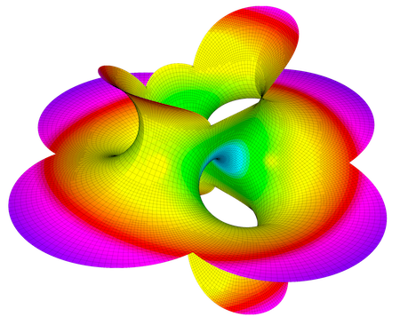
This miniapp solves Plateau's problem: the Dirichlet problem for the minimal surface equation.
Options to solve the minimal surface equations of both parametric surfaces as well as
surfaces restricted to be graphs of the form $z=f(x,y)$ are supported, including a
number of examples such as the Catenoid, Helicoid, Costa and Schrek surfaces.
For more details, please see the documentation in the miniapps/meshing directory.
The miniapp has a serial
(minimal-surface.cpp) and a
parallel (pminimal-surface.cpp)
version.
We recommend that new users start with the example codes before moving to the miniapps.
Low-Order Refined Transfer Miniapp
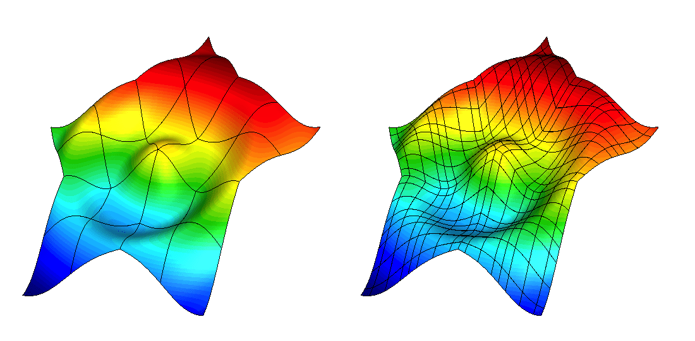
The lor-transfer miniapp, found under miniapps/tools demonstrates the
capability to generate a low-order refined mesh from a high-order mesh, and to
transfer solutions between these meshes.
Grid functions can be transferred between the coarse, high-order mesh and the
low-order refined mesh using either $L^2$ projection or pointwise evaluation.
These transfer operators can be designed to discretely conserve mass and to
recover the original high-order solution when transferring a low-order grid
function that was obtained by restricting a high-order grid function to the
low-order refined space.
The miniapp has only a serial
(lor-transfer.cpp) version.We recommend that new users start with the example codes before moving to the miniapps.
Interpolation Miniapps
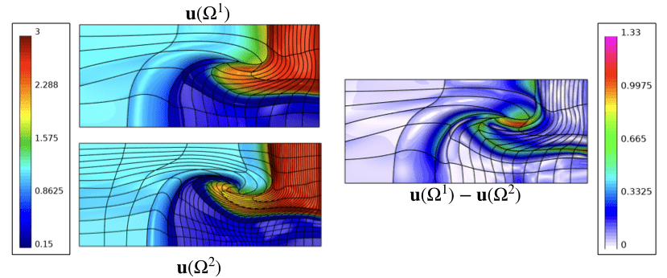
The interpolation miniapp, found under miniapps/gslib, demonstrate the
capability to interpolate high-order finite element functions at given set of
points in physical space.
These miniapps utilize the gslib library's
high-order interpolation utility for quad and hex meshes.
The Find Points miniapp has a serial
(findpts.cpp)
and a parallel
(pfindpts.cpp)
version that demonstrate the basic procedures for point search and evaluation
of grid functions.
The Field Diff miniapp
(field-diff.cpp)
demonstrates how grid functions on two different meshes can be compared with
each other.
These miniapps require installation of the gslib library. We recommend that new users start with the example codes before moving to the miniapps.
Laghos Miniapp
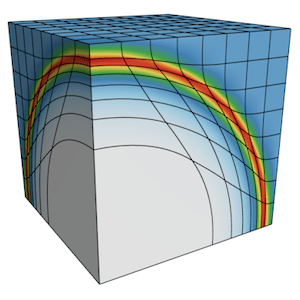
Laghos (LAGrangian High-Order Solver) is a miniapp that solves the
time-dependent Euler equations of compressible gas dynamics in a moving
Lagrangian frame using unstructured high-order finite element spatial
discretization and explicit high-order time-stepping.
The computational motives captured in Laghos include:
Support for unstructured meshes, in 2D and 3D, with quadrilateral and
hexahedral elements (triangular and tetrahedral elements can also be used, but
with the less efficient full assembly option). Serial and parallel mesh
refinement options can be set via a command-line flag.
Explicit time-stepping loop with a variety of time integrator options. Laghos
supports Runge-Kutta ODE solvers of orders 1, 2, 3, 4 and 6.
Continuous and discontinuous high-order finite element discretization spaces
of runtime-specified order.
Moving (high-order) meshes.
Separation between the assembly and the quadrature point-based computations.
Point-wise definition of mesh size, time-step estimate and artificial
viscosity coefficient.
Constant-in-time velocity mass operator that is inverted iteratively on
each time step. This is an example of an operator that is prepared once (fully
or partially assembled), but is applied many times. The application cost is
dominant for this operator.
Time-dependent force matrix that is prepared every time step (fully or
partially assembled) and is applied just twice per "assembly". Both the
preparation and the application costs are important for this operator.
Domain-decomposed MPI parallelism.
Optional in-situ visualization with GLVis and data output
for visualization / data analysis with VisIt.
The Laghos miniapp is part of the CEED software suite,
a collection of software benchmarks, miniapps, libraries and APIs for
efficient exascale discretizations based on high-order finite element
and spectral element methods. See http://github.com/ceed for more
information and source code availability.
Navier is a miniapp that solves the time-dependent Navier-Stokes equations of
incompressible fluid dynamics
\begin{align}
\frac{\partial u}{\partial t} + (u \cdot \nabla) u - \frac{1}{Re} \nabla^2 u - \nabla p &= f \\
\nabla \cdot u &= 0
\end{align}
using a spatially high-order finite element discretization.
The time-dependent problem is solved using a (up to) third order
implicit-explicit method which leverages an extrapolation scheme for the
convective parts and a backward-difference formulation for the viscous parts of
the equation.
The miniapp supports:
Arbitrary order H1 elements
High order mesh elements
IMEX (EXTk-BDFk) time-stepping up to third order
Convenient interface for new users
A variety of test cases and benchmarks
This miniapp has only a parallel
(navier_solver.cpp) version.
We recommend that new users start with the example codes before
moving to the miniapps.